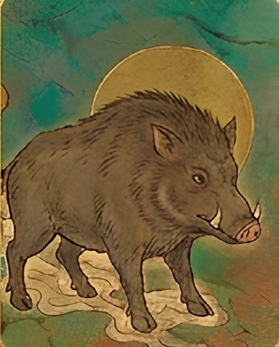

大家最常在什麼情緒下吃東西？
情緒熱力圖 / 餐前情緒分布
目前資料偏向高爽度與情緒軸，飲食常不是單純飢餓，也包含獎勵、安慰與想吃的瞬間。
FOODMOOD LOCAL ANALYSIS
這是一份用目前 Notion 公開資料做成的本地視覺化快照。重點放在「當康形像的人都吃什麼」、角色多寡原因、以及四軸象限如何形成不同靈獸。
情緒熱力圖 / 餐前情緒分布
目前資料偏向高爽度與情緒軸，飲食常不是單純飢餓，也包含獎勵、安慰與想吃的瞬間。
食後落差圖 / 快樂—負擔座標
甜點、炸物、火鍋、飲料很適合被標成「短暫療癒」，但部分紀錄會落到高負擔區。
靈獸圖鑑分布 / 十六型比例
當康最多，代表群體常落在「身體需求、原型、厚實、規律」的日常補給型。
24 小時食緒時鐘 / 餐次時間軸
午餐量最大，但點心、宵夜與晚餐更值得追壓力、犒賞、安慰等情緒性進食訊號。
食物來源 × 四軸雷達圖
下一步可加來源欄位，比較自煮、外食、便利商店、外送、手搖飲如何推動煉、幻、煞、曆。
當康代表身體需求、原型食、厚實、規律。資料裡它是目前最常見的孵化靈獸。

用目前 272 筆資料推估，這些是最有產品敘事感的觀察。
取曾孵化當康使用者的真實餐照。若圖片來源失效，卡片會自動淡出。
當康族群裡常出現的食物，比較像「穩定補給」而非單一口味。
橫軸：加工 ←→ 原型；縱軸：情緒 ←→ 身體。圓越大代表曾孵化人數越多。
角色多寡不是人氣投票，而是資料路徑的結果。
午餐是主戰場，代表這個產品最容易捕捉到「日常正餐」而不是只有情緒性進食。